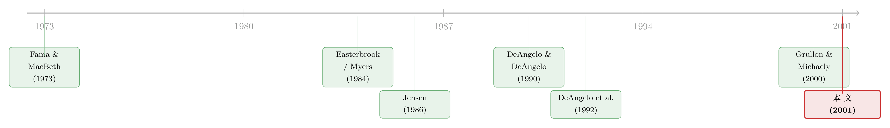

消失的股利：是公司变了，还是人心变了？
本文读的是 Fama & French (2001, Journal of Financial Economics)：美国付现金股利的上市公司比例，从 1978 年的 66.5% 一路跌到 1999 年的 20.8%。一半的原因是上市公司「换了一批人」——越来越多小、不赚钱、却拼命投资的新公司涌进市场；但更耐人寻味的另一半是，无论公司长成什么样，它都比从前更不愿意付股利了。后者，至少和前者一样重要。
1 一桩二十一年的「失踪案」
股利从来都是个谜。
道理其实很直白：股利的税率比资本利得高，所以在传统的眼光里，分红的公司是在「自找麻烦」——它给股东带来的是被多征一道税的现金，于是它的权益资本成本应该比不分红的公司更高，处于竞争劣势。可现实偏偏是，几十年来一大批公司年复一年地把现金分出去。为什么？这是股利之谜的老问题。
但 Fama 和 French 这篇文章想问的，不是「公司为什么分红」，而是一个更具体、也更刺眼的事实：付股利的公司，正在一家家消失。
他们用 CRSP 和 Compustat，盯住 1926–99 年的美国非金融、非公用事业上市公司，重点看 1972 年之后——这一年起，数据同时覆盖了 NYSE、AMEX 和 NASDAQ 三家交易所。结论触目惊心：1973 年，还有 52.8% 的公司付现金股利；这个比例一路升到 1978 年的峰值 66.5%；然后，就开始了「毫不留情」的下滑——1987 年掉到 30.3%，到 1999 年，只剩 20.8% 的公司还在分红。
二十一年，付股利的公司比例少了三分之二。这就是「消失的股利 (disappearing dividends)」。
2 两个嫌疑人
一桩失踪案，得先列出嫌疑人。Fama 和 French 把整篇文章拧成了一个最简单的问题：股利的消失，到底该归咎于谁？
嫌疑人一：公司变了 (changing characteristics)。 也许付股利的公司一直是同一类公司——大、赚钱、不太需要烧钱扩张；只是市场里这类公司的占比变小了。如果上市公司这个「群体」整体地朝着「从不分红的那种公司」漂移，那么哪怕每一类公司分红的意愿丝毫未变，加总起来的分红比例也会往下掉。
嫌疑人二：人心变了 (lower propensity to pay)。 也许并不是公司变了，而是公司「想不想分红」这件事本身变了——给定完全一样的盈利、规模和投资机会，今天的公司就是比二十年前更不愿意掏出现金。Fama 和 French 把这个叫做「更低的支付倾向」，它的潜台词是：股利在管理者和投资者心里的「感知价值」（不管那价值是什么），随着时间在贬值。
整篇论文，其实就是在这两个嫌疑人之间反复称重。而它最终给出的、也是最让人意外的判决是：两个都有罪，而且「人心变了」这条，至少和「公司变了」一样重。
首先得说清楚，要给「人心」定罪有多难。因为这两个嫌疑人会互相打掩护：当你看到分红比例下降，你既可以说「是因为不赚钱的小公司变多了」，也可以说「是因为大家都不爱分红了」——两种解释能产生几乎一样的总量数字。把它们干净地分开，正是这篇文章方法论上的全部功夫所在。但在动手分离之前，得先弄清楚：到底谁在付股利？
3 付股利的，是一群什么样的公司？
接着，一个自然的问题是：股利支付者长什么样？
Fama 和 French 先用最朴素的描述统计，把所有公司按股利状态分成几堆，再看它们在三个维度上的差别——盈利能力、投资机会、规模。后面再用 logit 回归确认。三个结论都很干净：
- 越赚钱，越分红。 1963–98 年间，付股利者的税前资产收益率
E_t/A_t平均7.82%，不付股利者只有5.37%。若换成对普通股股东更相关的口径Y_t/BE_t（普通股净利／账面权益），差距更大：付股利者12.75%，不付者仅6.15%。 - 投资越凶，越不分红。 资产增长率
dA_t/A_t：付股利者8.78%，而「从不分红」的公司高达16.50%。市值／账面资产比V_t/A_t（托宾 Q 的代理变量）也是从不分红者更高（1.64vs1.39），研发投入RD_t/A_t同样如此（2.76%vs1.61%）。 - 越大，越分红。 付股利公司的平均资产约
13.89亿美元，不付股利的只有约1.10亿——前者差不多是后者的十倍。
但真正精彩的，是把「不付股利」这一堆再拆成两半：
「曾经付过、现在不付」的前付股利者 (former payers)，是一群「困境公司」——盈利低（Y_t/BE_t 仅 3.18%）、投资也少（dA_t/A_t 仅 4.67%）。用文章里的话说，它们遭了「双重打击 (double whammy)」：既不赚钱，又没好项目。这和 DeAngelo & DeAngelo (1990)、DeAngelo et al. (1992) 的发现一致：通常只有陷入困境、出现严重亏损的公司才会终止分红。
「从不分红」的公司 (never paid) 则完全是另一副面孔：它们比前付股利者更赚钱，而且增长机会极好——高资产增长、高研发、高 Q。它们没分红，不是因为穷，而是因为有更好的地方花钱。付股利者的投资额大致和它的税前盈利相当，而从不分红者的投资额超过了它的盈利。
于是一条隐隐的链条浮现出来：盈利从高到低排，是付股利者 > 从不分红者 > 前付股利者；而投资从高到低排，几乎是反过来的。股利，正是公司在「赚到的钱」和「想花的钱」之间那道差额上的选择。
4 新上市公司「变质」了
然后，第一个嫌疑人开始现形。
公司这个群体为什么会朝「从不分红那一类」漂移？答案藏在新上市公司 (newly listed firms) 身上。CRSP 样本里的公司数从 1978 年的 3,638 家膨胀到 1999 年的 5,113 家，靠的全是新股涌入：1963–77 年新上市公司平均只占上市公司的 5.2%（每年 114 家），1978–99 年这个比例翻到 9.6%（每年 436 家）。
新公司向来又小又能投资——这不奇怪。真正发生变化的，是它们的盈利能力。1978 年之前，新上市公司比老公司更赚钱：1973–77 年，新股的盈利平均高达账面权益的 17.79%，而所有公司只有 13.68%。可此后二十年，新股的盈利一路下滑，到 1993–98 年，新上市公司的盈利平均只剩 2.07%，而所有公司是 11.26%。（这和 Jain & Kini (1994)、Mikkelson et al. (1997) 关于 IPO 上市后盈利低迷的证据是一脉相承的。）
新股越来越不赚钱，自然也越来越不分红：1973–77 年还有三分之一的新上市公司在上市当年就付股利，到 1999 年这个数字只剩 3.7%。一批又一批又小、又不赚钱、却大举投资的公司涌进来，且大多「从此再没分过红」——「从不分红」公司的占比，从 1978 年的 24.7% 暴涨到 1999 年的 70.1%，几乎正好对上了付股利公司占比的下滑。
一个常见的误读是「这不就是 NASDAQ 那帮不靠谱的新股闹的吗」。Fama 和 French 专门反驳了：三家交易所都在贡献不赚钱的新股，分红比例都在跌。NYSE 付股利公司比例从 1979 年的 88.6% 跌到 1999 年的 52.0%（大萧条以来未见的低位），AMEX 和 NASDAQ 分别从峰值 63.4%、54.1% 跌到 16.9% 和 8.6%。所以这不是一个「NASDAQ 现象」。
到这里，第一个嫌疑人已经罪证确凿：群体确实在漂移。但 Fama 和 French 说，这「只是故事的一半」。
5 识别策略：怎样把「人心」从「公司」里剥出来
但真正关键的一步在于——怎么证明，除了群体漂移之外，还有一股「不愿意付」的力量？
这正是全文方法论的核心。Fama 和 French 用了两条互相印证的路子。
第一条路：年度 logit 回归（Fama-MacBeth 式）。 他们逐年估计一个 logit 模型，被解释变量是「公司 i 在 t 年是否付股利」，解释变量就是上面那三个特征——盈利能力、投资机会（Q 或资产增长）、规模（用公司市值在 NYSE 公司里的百分位刻画）。logit 的标准形式是：
$$ \ln\!\left(\frac{p_{it}}{1-p_{it}}\right) = a_t + \sum_{k} b_{kt}\, X_{kit} $$
这里 \(p_{it}\) 是公司 \(i\) 在 \(t\) 年付股利的概率，\(X_{kit}\) 是它的第 \(k\) 个特征，\(a_t\) 与 \(b_{kt}\) 是当年的截距和斜率。仿照 Fama & MacBeth (1973) 的做法，对每一年单独跑一次回归，得到一串逐年的系数。
剥离的诀窍在这里：拿一个基期（比如 1963–77 年）估出来的平均系数 \(\bar a\)、\(\bar b_k\)，去套后来某一年真实公司的特征 \(X_{kit}\)，就能算出一个「预期的付股利公司比例」——这是「如果支付倾向停留在基期水平，给定今天这批公司的样子，本该有多少公司分红」。把它和当年实际的分红比例相比：
- 预期比例随时间下降的那部分，归因于特征变了（公司群体漂移）；
- 实际比例低于预期的那部分，就是支付倾向变了（人心变了）。
第二条路：组合频率法。 不信回归的人，也可以换个干净的办法：把公司按盈利、投资、规模分成许多组合，直接看每个组合里付股利公司的相对频率随时间怎么变。如果同一个「格子」里（即特征几乎完全相同的一群公司）分红比例也在往下掉，那就只能是支付倾向在下降。
两条路得出同一个答案：更低的支付倾向，至少和特征变化一样重要。
6 「人心变了」有多普遍？
于是反转出现了。这个「支付倾向下降」不是某个角落的局部现象，而是弥漫性的：
- 在盈利为正的公司里，1978 年后付股利比例下降了；但在盈利为负的公司里也照样下降。
- 小公司在 1978 年后大幅变得不爱分红；但大公司里付股利的比例同样下降了。
- 投资机会多的公司变得更不分红；投资机会少的公司也是。
换句话说，你切到哪一类公司里去看，都能看到「比从前更不愿意付」的影子。
不过这股力量在不同群体身上分量不同。典型的股利支付者（大、赚钱的公司）特征变化不大，控制住特征后，它们只是「稍微」更倾向于停止分红而已。真正剧烈的变化发生在另外两群人身上：1978 年后，从不分红的公司由于盈利更差、增长机会更多，「按特征预测」的分红发起率本就大幅走低；可即便控制住特征，它们的实际发起率还是更低了——从不分红者的分红发起率从 1963–77 年的 7.1%/年，跌到 1978–99 年的 1.8%，再到 1999 年微不足道的 0.7%。前付股利者恢复分红的概率也从 11.8%/年掉到 6.2%，再到 2.5%。
这就是为什么付股利者「青黄不接」：老的因为停止分红、被并购、退市而流失（1978–99 年付股利者的流失率从 6.8% 升到 9.8%，主要是并购拉高的），而新补进来的人——恢复分红的、首次分红的、上市当年就分红的——数量却越来越填不上窟窿。
（关于「股利到底是真消失了，还是只是集中到了少数巨头手里」，可参见《股利没有消失，它只是「搬」进了二十几家巨头的口袋》；而把这股「支付倾向」的潮起潮落归因于投资者偏好的「迎合理论」，则见《股利忽隐忽现的四十年，竟都写在一个「溢价」里》。）
7 那么，回购是凶手吗？
一个绕不开的追问是：1980 年代股票回购 (share repurchases) 大爆发，会不会是公司把「分红」换成了「回购」，所以付股利的公司才变少了？
Fama 和 French 的回答是否定的。回购基本上是付股利公司的「专利」——干回购的，本来就是那些已经在付现金股利的大公司。所以回购并不能解释「付股利公司比例」的下滑（那些消失的、从不分红的小公司，根本也不怎么回购）。回购真正干的事，是把现金股利支付者本就很高的盈利派现率又往上抬了一截。也就是说，回购改变的是「分多少」，而不是「谁在分」。这一点和 Grullon & Michaely (2000) 的「替代假说 (substitution hypothesis)」形成了有意思的张力——他们更强调回购对边际分红决策的替代。
8 文献脉络
把这篇文章放回它所在的那条河流里看，会更清楚它的位置。
最上游，是关于「股利为什么存在」的理论之争：Easterbrook (1984) 和 Jensen (1986) 从代理成本出发，认为分红（以及随之而来的外部融资约束）能管住经理人乱花自由现金流；而 Myers (1984)、Myers & Majluf (1984) 的啄食顺序 (pecking order) 则强调内部资金的优先级，间接影响分红。这些理论给出了「谁该分红」的先验。
中游，是 DeAngelo 父女及 Skinner 一系列扎实的实证：DeAngelo & DeAngelo (1990) 和 DeAngelo et al. (1992) 发现只有陷入困境、严重亏损的公司才会真正砍掉股利——这恰恰是本文「前付股利者多为困境公司」的来源。方法上，本文沿用的是 Fama & MacBeth (1973) 那套「逐年回归、再平均系数」的经典框架。

本文 (Fama & French, 2001) 站在这条河的一个转折点上：它第一次系统地把「群体特征漂移」和「支付倾向下降」两股力量定量地分开，并指出后者——一个此前几乎没被认真度量过的、属于「人心」的变量——其实分量惊人。它也直接催生了下游一大批研究，从 Grullon & Michaely (2000) 的回购替代，到后来 Baker & Wurgler 把这股「倾向」解释为对投资者偏好的迎合，再到关于股利「集中化」的争论。Fama 和 French 自己在 Fama & French (1999) 里，也用同一套数据检验了权衡与啄食顺序理论（这条线可参见《越赚钱，越不肯借钱——两个资本结构理论，各有一处「死穴」》）。
评论与延伸（Q&A + 研究方向）
(a) 几个可能的疑问
Q：「更低的支付倾向」会不会只是模型设定不对、漏了某个变量造成的假象？
这是最该警惕的地方，也是本文识别的软肋。「支付倾向」本质上是一个残差——实际分红比例减去模型按特征预测的比例。只要 logit 里漏掉了某个随时间系统性变化、又与分红相关的特征（比如盈利的波动性、现金持有、债务结构），它就会被错误地记到「倾向」头上。Fama 和 French 用 logit 和组合频率两条独立路子互相印证，是为了缓解这种担忧，但无法根除。所以更稳妥的读法是：这是一个未被现有特征解释的、随时间下降的成分，而不是一个有明确经济内涵的「偏好」。
Q：这和「股利集中化」的说法矛盾吗？
不矛盾，是同一枚硬币的两面。本文讲的是付股利公司数量占比的下滑；而集中化研究讲的是分红总金额越来越集中到少数大公司手里。完全可能是：付股利的公司越来越少（本文），但还在付的那批巨头分得越来越多（集中化）。两者一起，才是完整的图景。
Q：为什么说「人心变了」至少和「公司变了」一样重要——这个「至少」是怎么来的？
因为两条估计路径（logit 与组合频率）都把分红比例的下滑大致对半拆给了两个因素，且支付倾向那一半在多数设定下不小于特征那一半。需要强调的是「至少」二字背后的不确定性：具体的分摊比例对模型设定相当敏感，文章给的是一个量级判断，而非精确的 50/50。
Q：税收解释不掉这件事吗？毕竟美国税制几经改革。
单靠税率变化很难解释。如果是税收驱动，理应集中作用于税率敏感的群体；但本文发现支付倾向的下降是弥漫性的——正盈利、负盈利、大、小、投资多、投资少的公司里都在下降。一个针对性很强的税收变量，难以同时压低所有这些不同群体。
Q：回购既然主要是付股利公司在做，那它到底有没有改变「分红决策」？
在「谁还算付股利公司」这个口径上，几乎没有——回购无法解释付股利公司比例的崩塌。但在「分多少」的边际上，回购显著抬高了大公司的总派现。本文和 Grullon & Michaely (2000) 的分歧正在于此：替代到底发生在「是否分红」的离散边际，还是「分多少」的连续边际上。
Q：这个结论今天还成立吗？毕竟样本停在 1999 年。
这是个开放问题。2000 年后美国出现了分红的部分回潮（与 2003 年股利税改、迎合效应有关），所以「支付倾向单调下降」未必延续。把这套 logit/组合框架推到 2000 年后、甚至推到别国市场，本身就是值得做的复制研究。
(b) 几个可能的研究问题与提案
1. 把「支付倾向」搬到公司债／信用市场。
【经济故事】本文度量的是股权派现的「倾向」。一个平行的问题是：发债公司「主动还本付息之外、是否倾向于提前赎回或主动去杠杆」的倾向，是否也随时间在变？这关乎信用风险的隐性变化。【可行性】中。Mergent FISD 有债券层面的赎回、再融资数据，可仿照本文做逐年 logit；难点在于赎回决策内生于利率，需要把利率环境作为时变控制变量，识别没有本文干净。
2. 外资持有人是否改变了公司的「支付倾向」？
【经济故事】不同国家的投资者对股利的偏好差异很大（有的市场强烈偏好现金股利）。当一家公司的外资持股上升，它的分红倾向是否被「拉」向外资母国的偏好？这是迎合理论的一个跨境版本。【可行性】中。需要 FactSet/Thomson 的机构持股按国别拆分，配合 MSCI 纳入等「可投资度」冲击作为外生变化（这类自然实验在我读过的《外资真是「蝗虫」吗？》一文里被反复用到）。doable，但要小心持股与分红的双向因果。
3. 新上市公司「变质」与分红消失的因果链。 【经济故事】本文把新股盈利下滑和分红下降摆在一起，但只是描述性关联。能否找到一个只影响「哪类公司能上市」、却不直接影响在位公司分红意愿的外生冲击（如上市标准变更、SPAC 浪潮），来识别「群体漂移」这一条腿的因果权重？【可行性】中。上市规则的离散变更可做断点／DiD；难在新股质量本身也受宏观周期影响。
4. 流动性视角：付股利公司的消失，是否改变了股市的整体流动性结构？
【经济故事】付股利公司多为大、稳的蓝筹，它们占比下降意味着市场的「久期」和现金流确定性在变。这是否系统性地改变了横截面的流动性溢价？【可行性】高。CRSP 即可构造分红状态与流动性指标（Amihud、价差），做面板回归；纯关联性研究门槛低，但要讲清因果需要更强设计。
5. 用结构化的支付倾向，重估「迎合理论」与本文残差的关系。 【经济故事】Baker-Wurgler 的迎合理论给「支付倾向」找了一个需求侧的驱动（股利溢价）。一个干净的检验是：本文 logit 残差（倾向成分）能在多大程度上被股利溢价解释？剩下解释不掉的，又是什么？【可行性】高。两套指标都可从公开数据复制，时间序列回归即可；这是一个低成本、却能厘清两条文献关系的研究。
参考文献
- Allen, F., Michaely, R. (1995). Dividend policy. In: Handbooks in Operations Research and Management Science: Finance. North-Holland, pp. 793–838.
- Bagwell, L., Shoven, J. (1989). Cash distributions to shareholders. Journal of Economic Perspectives 3, 129–149.
- DeAngelo, H., DeAngelo, L. (1990). Dividend policy and financial distress: an empirical examination of troubled NYSE firms. Journal of Finance 45, 1415–1431.
- DeAngelo, H., DeAngelo, L., Skinner, D. (1992). Dividends and losses. Journal of Finance 47, 1837–1863.
- DeAngelo, H., DeAngelo, L., Skinner, D. (2000). Special dividends and the evolution of dividend signaling. Journal of Financial Economics 57, 309–354.
- Easterbrook, F. (1984). Two agency-cost explanations of dividends. American Economic Review 74, 650–659.
- Fama, E., French, K. (1999). Testing tradeoff and pecking order predictions about dividends and debt. Working paper, MIT.
- Fama, E., MacBeth, J. (1973). Risk, return, and equilibrium: empirical tests. Journal of Political Economy 81, 607–636.
- Grullon, G., Michaely, R. (2000). Dividends, share repurchases, and the substitution hypothesis. Working paper, Cornell University.
- Jagannathan, M., Stephens, C., Weisbach, M. (2000). Financial flexibility and the choice between dividends and stock repurchases. Journal of Financial Economics 57, 355–384.
- Jain, B., Kini, O. (1994). The post-issue operating performance of IPO firms. Journal of Finance 49, 1699–1726.
- Jensen, M. (1986). Agency costs of free-cash-flow, corporate finance, and takeovers. American Economic Review 76, 323–329.
- Mikkelson, W., Partch, M., Shah, K. (1997). Ownership and operating performance of companies that go public. Journal of Financial Economics 44, 281–307.
- Myers, S. (1984). The capital structure puzzle. Journal of Finance 39, 575–592.
- Myers, S., Majluf, N. (1984). Corporate financing and investment decisions when firms have information the investors do not have. Journal of Financial Economics 13, 187–221.